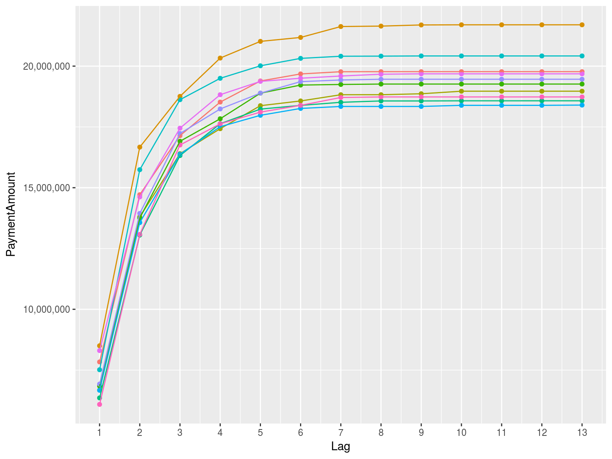
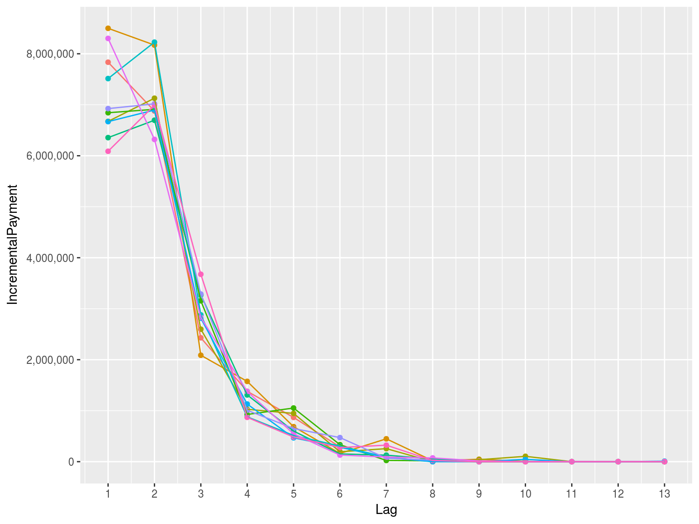
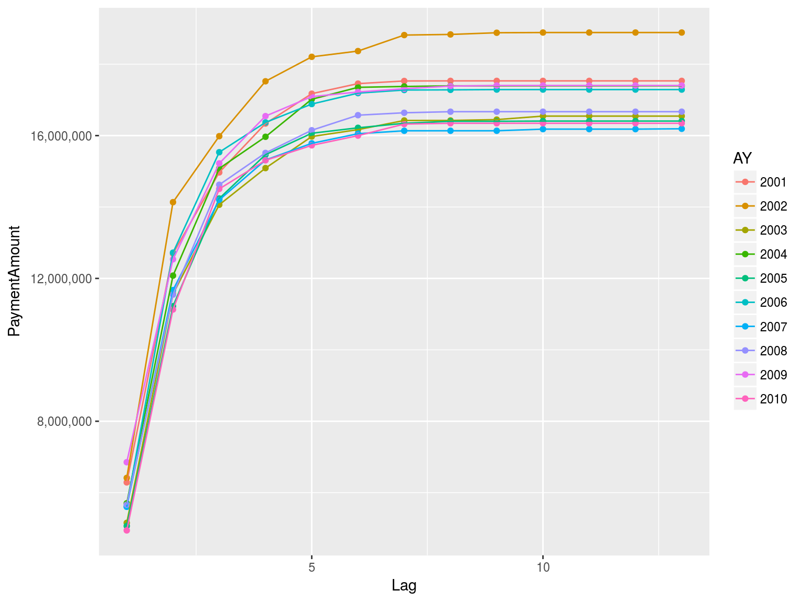
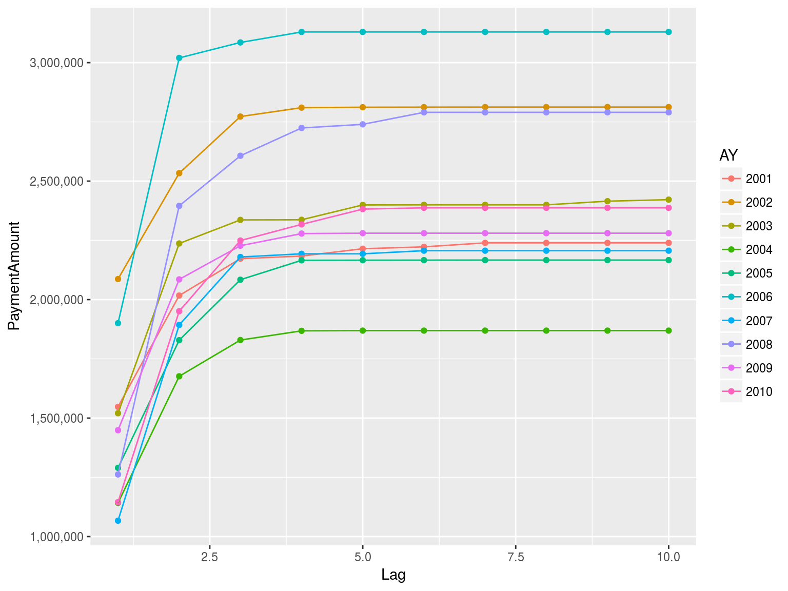
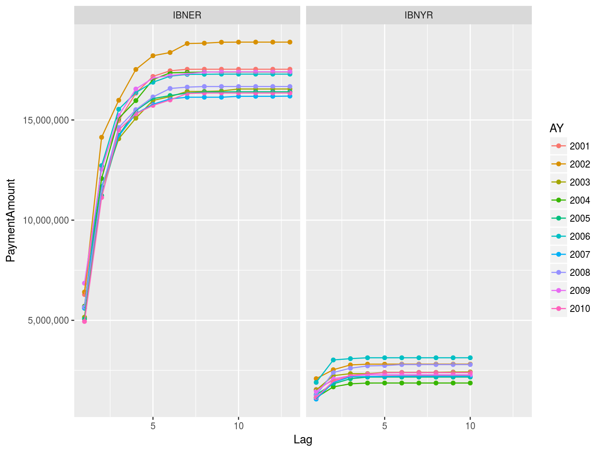
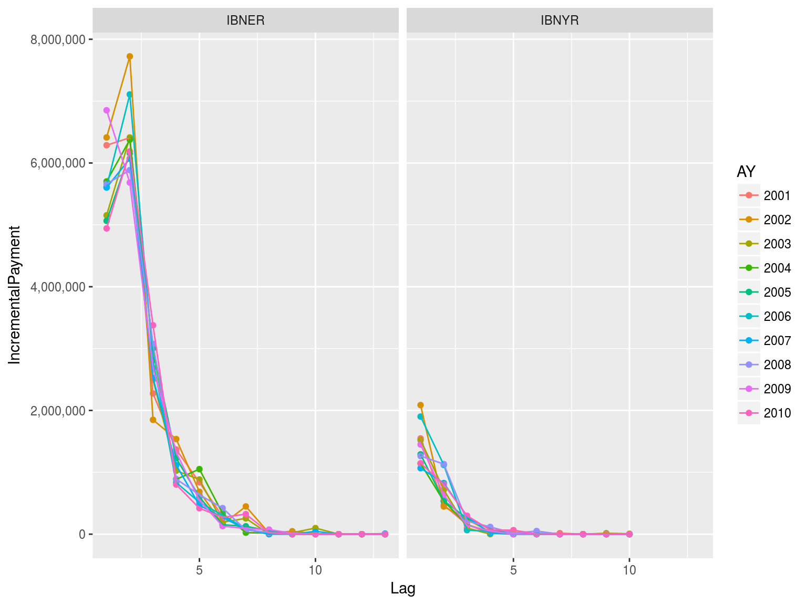
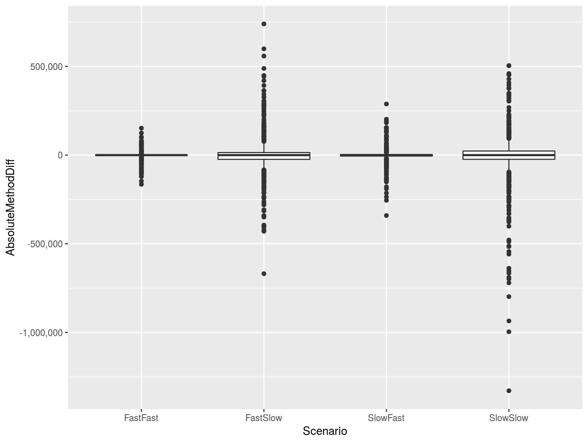
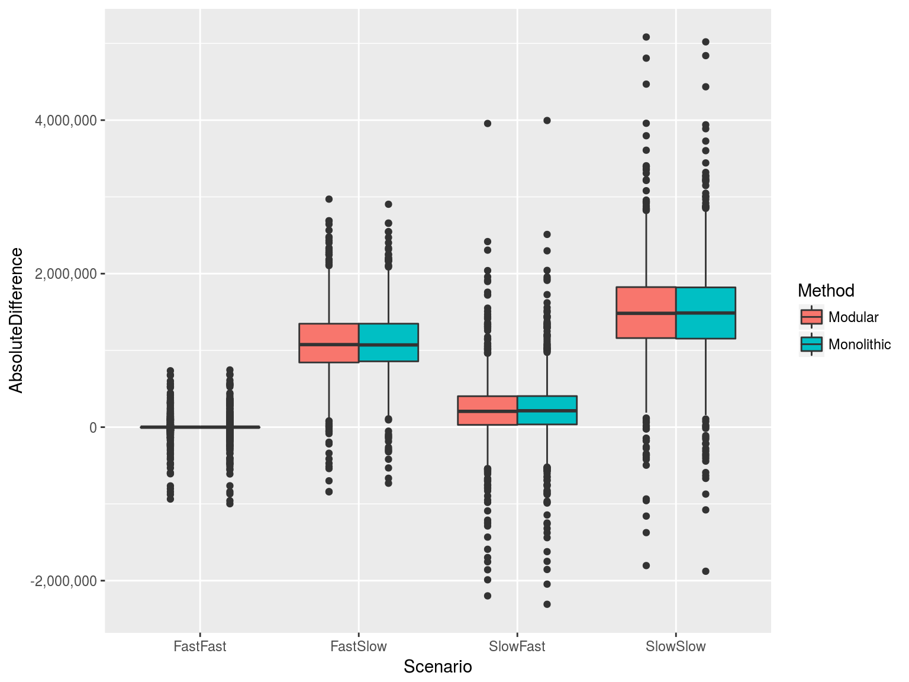
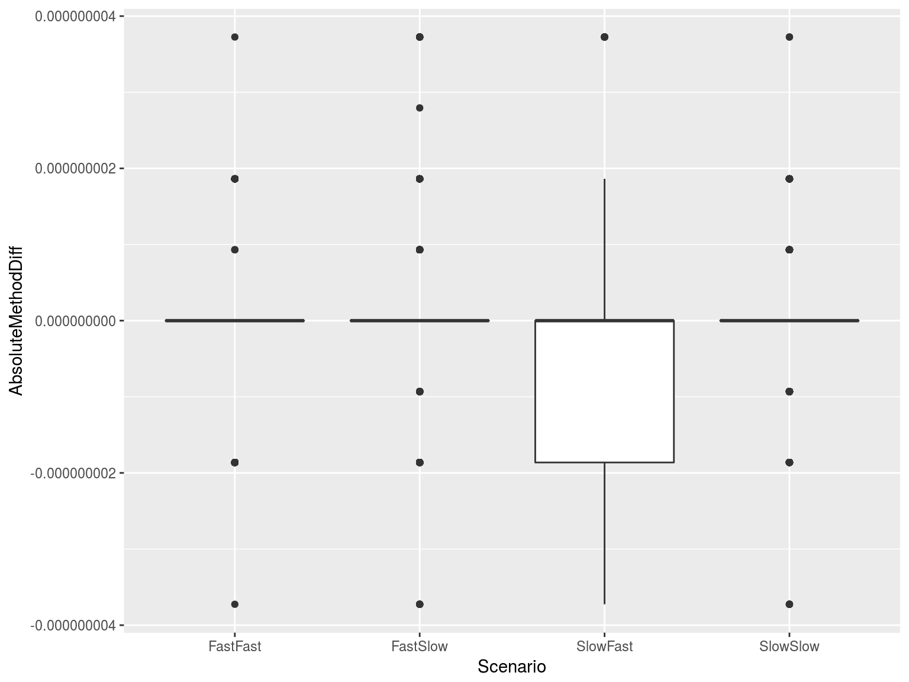
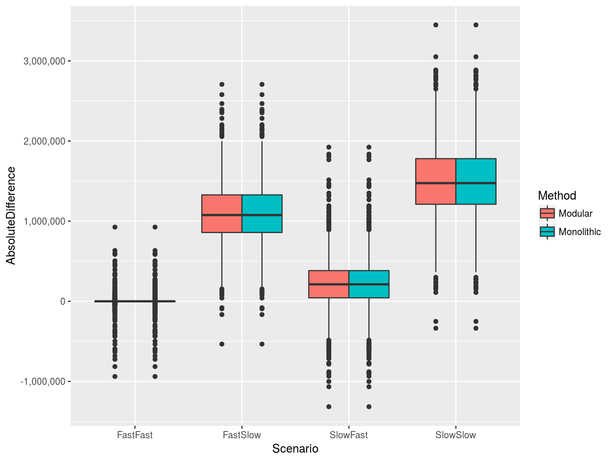

I’m focusing exclusively on aggregate triangle techniques. Statements made regarding the output of estimation methods may not follow in an individual claim reserving context.
I’d much rather be looking at individual losses.
| Accident Year | Claim Ct | Ultimate Loss | First Report | Last Payment |
|---|---|---|---|---|
| 2001 | 501 | 19,772,398 | 2001-01-08 | 2009-01-26 |
| 2002 | 514 | 21,699,598 | 2002-01-07 | 2011-12-27 |
| 2003 | 484 | 18,968,643 | 2003-01-02 | 2012-12-04 |
| 2004 | 470 | 19,262,598 | 2004-01-02 | 2012-03-17 |
| 2005 | 471 | 18,574,205 | 2005-01-09 | 2016-07-03 |
| 2006 | 496 | 20,418,912 | 2006-01-04 | 2014-12-21 |
| 2007 | 471 | 18,397,735 | 2007-01-04 | 2019-02-08 |
| 2008 | 511 | 19,460,214 | 2008-01-07 | 2017-03-03 |
| 2009 | 506 | 19,682,945 | 2009-01-03 | 2017-10-18 |
| 2010 | 481 | 18,733,308 | 2010-01-01 | 2017-08-31 |
| AccidentYear | 1 | 2 | 3 | .. | 7 | 8 | 9 | 10 |
|---|---|---|---|---|---|---|---|---|
| 2001 | 7,834,398 | 6,877,705 | 2,429,549 | … | 90,693 | 2,562 | 72 | 0 |
| 2002 | 8,499,186 | 8,170,313 | 2,087,249 | … | 448,459 | 17,594 | 47,421 | 6,042 |
| 2003 | 6,674,088 | 7,128,127 | 2,597,757 | … | 255,842 | 697 | 39,057 | 104,925 |
| 2004 | 6,843,870 | 6,910,323 | 3,155,317 | … | 24,250 | 16,912 | 0 | 0 |
| 2005 | 6,355,292 | 6,696,805 | 3,270,729 | … | 127,527 | 54,973 | 0 | 6,246 |
| 2006 | 7,513,606 | 8,227,487 | 2,878,960 | … | 87,681 | 4,435 | 7,621 | 0 |
| 2007 | 6,669,704 | 6,896,425 | 2,813,393 | … | 81,978 | 113 | 4 | 45,684 |
| 2008 | 6,924,720 | 7,018,169 | 3,287,595 | … | 67,525 | 30,150 | 0 | 7 |
| 2009 | 8,301,035 | 6,320,272 | 2,827,725 | … | 90,978 | 73,788 | 15,668 | 0 |
| 2010 | 6,087,771 | 6,992,891 | 3,675,497 | … | 323,932 | 22,461 | 0 | 0 |
| AccidentYear | 1 | 2 | 3 | 4 | 5 | 6 | 7 | 8 |
|---|---|---|---|---|---|---|---|---|
| 2001 | 295 | 149 | 39 | 6 | 9 | 2 | 1 | 0 |
| 2002 | 305 | 137 | 44 | 17 | 7 | 3 | 1 | 0 |
| 2003 | 266 | 170 | 30 | 6 | 7 | 3 | 0 | 0 |
| 2004 | 273 | 148 | 30 | 12 | 5 | 1 | 1 | 0 |
| 2005 | 266 | 141 | 48 | 9 | 4 | 2 | 1 | 0 |
| 2006 | 275 | 167 | 40 | 13 | 0 | 1 | 0 | 0 |
| 2007 | 266 | 148 | 38 | 14 | 3 | 2 | 0 | 0 |
| 2008 | 285 | 156 | 46 | 13 | 6 | 5 | 0 | 0 |
| 2009 | 287 | 152 | 41 | 18 | 8 | 0 | 0 | 0 |
| 2010 | 252 | 164 | 46 | 13 | 4 | 2 | 0 | 0 |
There are counts being reported in development lag 7!!!






If we have individual claim data, it’s super easy. The IBNYR triangle is simply the first record, when claims have been arranged in ascending order of payment date (or reserve date or whatever).
Hang on. You just said if we have individual claim data? Isn’t that where aggregate triangles come from?
| OccurrenceDate | ReportDate | PaymentDate | PaymentAmount |
|---|---|---|---|
| 2001-01-30 | 2001-03-26 | 2001-03-26 | 108 |
| 2001-01-30 | 2001-03-26 | 2001-03-26 | 0 |
| 2001-01-30 | 2001-03-26 | 2001-03-26 | 2,817 |
| 2001-01-30 | 2001-03-26 | 2001-04-04 | 840 |
| 2001-01-30 | 2001-03-26 | 2001-04-04 | 446 |
| 2001-02-24 | 2003-09-24 | 2004-02-22 | 1 |
| 2001-02-24 | 2003-09-24 | 2004-02-23 | 48,349 |
| 2001-02-24 | 2003-09-24 | 2004-02-23 | 1,232 |
| 2001-02-24 | 2003-09-24 | 2004-02-23 | 384 |
| 2001-02-24 | 2003-09-24 | 2004-02-27 | 2 |
The first record in that table is the IBNYR record.
df <- dfClaims %>%
arrange(ClaimID, PaymentDate) %>%
group_by(ClaimID) %>%
slice(1) %>%
ungroup()Evaluation dates are an artificial construct which we impose on individual claim data. They’re arbitrary and have a lot more to do with financial reporting than the underlying stochastic process.
And we’re just going to leave that idea there and move one.
Create 100 individual claim simulations. Aggregate into monolithic and modular triangle(s).
Use standard chain ladder to estimate results.
How did that turn out?


Actually, I couldn’t lose with the simulation.
Use the additive method! It’s Brian’s favorite!

Same predictor in a linear model means that we can just add the result.
